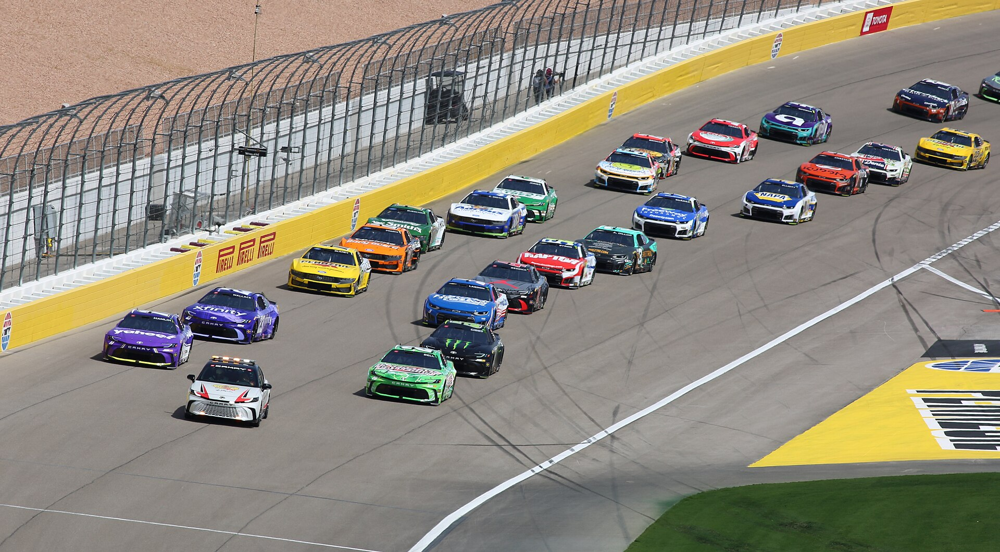

A NASCAR é uma das competições mais tradicionais do automobilismo mundial. Conhecida pelas corridas disputadas em alta velocidade, pelos carros de aparência robusta e pelas ultrapassagens realizadas a centímetros de distância, a categoria construiu uma identidade própria e se tornou um dos maiores símbolos da cultura esportiva dos Estados Unidos.
Embora seja frequentemente associada aos circuitos ovais, a NASCAR oferece muito mais do que carros acelerando continuamente para a esquerda. Estratégia de combustível, desgaste dos pneus, trabalho das equipes nos boxes, disputas por posição e diferentes tipos de pista tornam cada corrida um desafio particular.
Com uma história iniciada na década de 1940, a organização ajudou a transformar as competições de stock cars em um espetáculo profissional. Ao longo das gerações, nomes como Richard Petty, Dale Earnhardt, Jeff Gordon e Jimmie Johnson se tornaram referências de uma modalidade que combina tradição, tecnologia e rivalidade.
O que é a NASCAR
A sigla de National Association for Stock Car Auto Racing, organização responsável por regulamentar e promover diferentes campeonatos de automobilismo, especialmente nos Estados Unidos.
A principal competição organizada pela entidade é a NASCAR Cup Series, divisão de elite que reúne pilotos, equipes e fabricantes em um calendário de corridas realizadas em diferentes circuitos.
A expressão stock car está relacionada à origem das competições com automóveis derivados de modelos de produção. Nas primeiras décadas, os veículos mantinham uma relação muito mais próxima com os carros vendidos ao público.
Com a evolução tecnológica, os automóveis passaram por profundas transformações. Atualmente, os modelos da Cup Series são máquinas construídas especificamente para competição, com estruturas de segurança, componentes aerodinâmicos e sistemas desenvolvidos para suportar as exigências das corridas.
A origem: como nasceu o automobilismo americano
A NASCAR está diretamente ligada à popularização das corridas de automóveis no sul dos Estados Unidos.
Em 14 de dezembro de 1947, Bill France Sr. reuniu representantes do automobilismo no Streamline Hotel, em Daytona Beach, na Flórida, para discutir a organização e a padronização das competições de stock cars.
O projeto deu origem à NASCAR, que realizou sua primeira corrida em 15 de fevereiro de 1948, em um circuito que utilizava trechos de praia e estrada em Daytona Beach. Red Byron venceu aquela prova.
O passo decisivo para a formação da principal categoria ocorreu em 19 de junho de 1949, quando aconteceu a primeira corrida da divisão Strictly Stock, predecessora da atual Cup Series.
Disputada no Charlotte Fairgrounds Speedway, a prova teve Jim Roper como vencedor. Naquela temporada, Red Byron conquistou o primeiro campeonato da divisão.
A transformação de Daytona em um centro do automobilismo ganhou força com a inauguração do Daytona International Speedway e a realização da primeira Daytona 500, em 1959. Lee Petty venceu a edição inaugural, decidida após uma análise que confirmou sua vantagem sobre Johnny Beauchamp.
Nas décadas seguintes, a NASCAR ampliou sua presença nacional, atraiu grandes fabricantes, desenvolveu novas tecnologias e consolidou rivalidades que atravessaram gerações.
Como funcionam as corridas
As provas são disputadas em circuitos fechados, com uma distância previamente estabelecida.
Durante a corrida, os competidores precisam administrar diversos elementos que influenciam diretamente o desempenho.
A conservação dos pneus é fundamental, especialmente em pistas onde o desgaste compromete a aderência. O consumo de combustível também exige planejamento, pois uma parada adicional nos boxes pode custar várias posições.
Outro componente decisivo é o tráfego. Diferentemente de situações em que os carros ficam separados por grandes intervalos, as corridas da NASCAR frequentemente apresentam grupos disputando espaço, especialmente em pistas de alta velocidade.
Os pilotos também dependem da comunicação constante com suas equipes. Além do chefe de equipe, o spotter desempenha uma função importante ao informar a posição dos adversários e alertar sobre situações que podem não estar claramente visíveis dentro do carro.
Nos boxes, a eficiência dos mecânicos pode transformar o resultado. Trocas de pneus, reabastecimento e ajustes precisam ser executados com precisão, enquanto as decisões estratégicas consideram o momento da corrida e a posição dos concorrentes.
O que significam as sinalizações
As bandeiras são utilizadas pela direção de prova para transmitir informações aos competidores.
- Bandeira verde: indica o início ou a retomada da corrida em condições normais.
- Bandeira amarela: sinaliza uma situação de atenção ou neutralização, normalmente provocada por acidentes, detritos ou condições inseguras na pista.
- Bandeira vermelha: determina a interrupção da atividade na pista.
- Bandeira branca: informa que o líder está iniciando a última volta programada.
- Bandeira quadriculada: marca o encerramento da corrida.
As neutralizações são especialmente importantes na NASCAR porque podem reduzir as diferenças entre os carros e alterar completamente as estratégias planejadas.
Como funciona a pontuação e a disputa pelo título
O campeonato passou por diferentes sistemas de pontuação ao longo da história.
A partir de 2026, a organização retomou o formato chamado The Chase para definir os campeões das três principais divisões nacionais, substituindo o modelo anterior de playoffs eliminatórios.
Na Cup Series, a temporada possui uma fase regular de 26 corridas, seguida por dez provas decisivas. Os 16 primeiros colocados na classificação da temporada regular avançam ao Chase.
A classificação para essa fase é determinada pelos pontos acumulados, sem garantia automática de vaga apenas por vencer uma corrida.
As corridas também distribuem pontos adicionais nos estágios, conhecidos como stages, que recompensam os pilotos mais bem posicionados nesses segmentos.
No início do Chase, a pontuação dos classificados é reorganizada de acordo com a campanha na fase regular. Não existem eliminações entre as dez corridas decisivas, e o título fica com o participante que encerrar a temporada com mais pontos.
Esse modelo procura equilibrar dois fatores fundamentais: a importância de vencer corridas e a necessidade de manter regularidade ao longo do campeonato.
As principais categorias
A estrutura nacional da NASCAR reúne três campeonatos de destaque, cada um com características próprias.
NASCAR Cup Series
É a principal divisão da organização, considerada o nível mais alto das corridas de stock cars da NASCAR.
Reúne equipes de ponta, fabricantes importantes e pilotos de grande reconhecimento. Seu calendário inclui circuitos ovais de diferentes dimensões, pistas mistas e outros traçados que exigem adaptações técnicas.
NASCAR O'Reilly Auto Parts Series
É a segunda principal categoria nacional e foi conhecida durante muitos anos como Xfinity Series.
A competição tem papel relevante na formação de pilotos e oferece um ambiente competitivo para jovens talentos, profissionais experientes e equipes que buscam crescer dentro do automobilismo americano.
NASCAR Craftsman Truck Series
A terceira divisão nacional tem como característica os veículos de competição com carroceria inspirada em picapes.
Além de desenvolver novos talentos, a Truck Series proporciona disputas próprias, pois os veículos apresentam características diferentes dos automóveis utilizados nas outras duas categorias.
As três divisões fazem parte de uma estrutura que também inclui competições regionais e categorias de desenvolvimento.
Os circuitos ovais
Os traçados estão entre os elementos mais conhecidos da NASCAR, mas existe uma grande diversidade entre eles.
Alguns circuitos são curtos, estreitos e exigem constantes disputas por posição. Outros possuem retas extensas e curvas inclinadas que permitem velocidades elevadas.
A NASCAR utiliza tradicionalmente três grandes classificações de pistas ovais: short tracks, circuitos intermediários e superspeedways.
Nos short tracks, como Martinsville e Bristol, a proximidade entre os carros cria uma disputa intensa por espaço. A aceleração na saída das curvas, a frenagem e a capacidade de ultrapassar adversários no tráfego são essenciais.
Em pistas intermediárias, a eficiência aerodinâmica, o comportamento dos pneus e os ajustes do veículo ganham destaque.
Já em Daytona e Talladega, as elevadas velocidades tornam o trabalho aerodinâmico coletivo um fator fundamental.
Entretanto, a NASCAR não se limita aos ovais. Circuitos mistos, como Watkins Glen e Sonoma, exigem frenagens intensas e curvas para ambos os lados, enquanto traçados urbanos oferecem desafios adicionais.
Essa variedade impede que o sucesso dependa de apenas uma habilidade e valoriza pilotos capazes de se adaptar a situações muito diferentes.
A inclinação das pistas e a velocidade dos carros
Uma das características mais impressionantes da NASCAR é a inclinação das curvas, conhecida no automobilismo como banking. Em determinados circuitos, os carros percorrem curvas com mais de 30 graus de inclinação, mantendo velocidades que podem ultrapassar 300 km/h.
Diferentemente de uma pista plana, os circuitos com banking possuem a parte externa das curvas mais elevada do que a interna. Essa geometria ajuda os veículos a contornar as curvas em alta velocidade, pois parte da força exercida pela pista contribui para mudar a direção do carro.
Quanto maior a inclinação, maior pode ser a velocidade de passagem pela curva, desde que outros fatores, como raio da curva, aderência dos pneus e características do veículo, também permitam.
A velocidade dos carros varia consideravelmente de acordo com o circuito, a configuração técnica e o regulamento utilizado.
Em fevereiro de 2025, Chase Briscoe conquistou a pole position da Daytona 500 registrando uma volta a 182,745 milhas por hora, aproximadamente 294 km/h de velocidade média.
Em Michigan, um circuito de duas milhas com curvas de 18 graus, a média das velocidades das voltas que garantiram a pole position na geração Next Gen, até junho de 2025, era de 192,04 milhas por hora, aproximadamente 309 km/h.
Um dos registros históricos mais impressionantes pertence a Bill Elliott. Em 1987, o piloto conquistou a pole em Talladega com uma média de 212,809 milhas por hora, equivalente a aproximadamente 342,5 km/h. Essa marca pertence a um período anterior às restrições de potência introduzidas nos superspeedways.
É importante diferenciar velocidade máxima instantânea de velocidade média de uma volta. Os números de classificação representam a média registrada ao completar todo o circuito, não necessariamente a maior velocidade alcançada nas retas.
O que é o drafting
É uma das técnicas mais importantes nas corridas disputadas em pistas de alta velocidade.
O fenômeno acontece quando um carro acompanha outro de perto e aproveita as condições aerodinâmicas criadas pelo veículo à frente. A redução da resistência do ar pode ajudar o piloto que vem atrás a ganhar velocidade e preparar uma ultrapassagem.
Em determinados circuitos, a formação de grupos de carros é decisiva para o desempenho.
Isso produz situações estratégicas interessantes: dois competidores podem cooperar momentaneamente para aumentar a velocidade de seu grupo e, pouco depois, disputar diretamente a mesma posição.
O drafting também explica por que um piloto isolado pode encontrar dificuldades para acompanhar um pelotão organizado.
Na NASCAR, portanto, a velocidade individual não é o único fator relevante. A leitura do movimento dos adversários pode influenciar o resultado tanto quanto a potência do motor.
A corrida mais famosa
Entre todas as provas do calendário, a Daytona 500 ocupa uma posição especial.
Disputada no Daytona International Speedway, na Flórida, a corrida possui 500 milhas, aproximadamente 805 quilômetros, distribuídas em 200 voltas no circuito de 2,5 milhas.
A primeira edição aconteceu em 1959, com vitória de Lee Petty.
A competição passou a ser reconhecida como a Great American Race, expressão que representa sua importância histórica e cultural.
Ao contrário de outros grandes eventos automobilísticos tradicionalmente posicionados nas etapas finais do calendário, a Daytona 500 abre a temporada da Cup Series desde 1982.
Vencer em Daytona representa uma conquista de enorme prestígio, inclusive para pilotos que já possuem títulos nacionais.
Richard Petty é o maior vencedor da história da prova, com sete triunfos. Cale Yarborough aparece entre os principais nomes do evento, com quatro conquistas.
A combinação entre tradição, alta velocidade, estratégia aerodinâmica e finais imprevisíveis transformou Daytona em um dos símbolos mais fortes da NASCAR.
Os 10 maiores campeões
A história da NASCAR Cup Series reúne pilotos que marcaram diferentes épocas. Richard Petty, Dale Earnhardt e Jimmie Johnson dividem o recorde histórico da principal categoria, com sete títulos cada. Ao todo, dez pilotos conquistaram pelo menos três campeonatos.
- Richard Petty — 7 títulos (1964, 1967, 1971, 1972, 1974, 1975 e 1979).
- Dale Earnhardt — 7 títulos (1980, 1986, 1987, 1990, 1991, 1993 e 1994).
- Jimmie Johnson — 7 títulos (2006, 2007, 2008, 2009, 2010, 2013 e 2016).
- Jeff Gordon — 4 títulos (1995, 1997, 1998 e 2001).
- Lee Petty — 3 títulos (1954, 1958 e 1959).
- David Pearson — 3 títulos (1966, 1968 e 1969).
- Cale Yarborough — 3 títulos (1976, 1977 e 1978).
- Darrell Waltrip — 3 títulos (1981, 1982 e 1985).
- Tony Stewart — 3 títulos (2002, 2005 e 2011).
- Joey Logano — 3 títulos (2018, 2022 e 2024).
Richard Petty, conhecido como The King, também detém o recorde histórico de 200 vitórias na principal divisão. Dale Earnhardt ficou marcado pelo estilo agressivo que lhe rendeu o apelido de The Intimidator, enquanto Jimmie Johnson conquistou cinco campeonatos consecutivos entre 2006 e 2010, uma das sequências mais impressionantes da história da categoria.
Jeff Gordon, com quatro títulos, teve papel fundamental na popularização da NASCAR, enquanto Joey Logano se tornou, em 2024, o décimo piloto da história a alcançar pelo menos três campeonatos na Cup Series.
Como são os carros
Embora a NASCAR tenha nascido de competições com veículos próximos dos modelos comercializados, a realidade atual é bastante diferente.
Os carros da Cup Series são desenvolvidos para competição profissional e possuem características específicas de segurança, suspensão, aerodinâmica e transmissão.
Em 2022, a NASCAR introduziu a geração de veículos conhecida como Next Gen.
O projeto trouxe mudanças importantes na construção dos automóveis, incluindo novas soluções de suspensão, rodas de 18 polegadas e componentes padronizados.
Chevrolet, Ford e Toyota participaram do desenvolvimento dessa geração, mantendo identidades visuais associadas aos seus respectivos modelos.
O objetivo das mudanças incluiu aproximar o desenho dos carros de competição dos modelos de produção, aprimorar aspectos técnicos e controlar determinados custos das equipes.
Apesar dessa relação estética com os automóveis vendidos ao público, os veículos da NASCAR continuam sendo máquinas de corrida desenvolvidas para condições extremas.
As diferenças entre a Fórmula 1
As duas categorias estão entre as competições mais conhecidas do automobilismo, mas representam propostas técnicas e esportivas diferentes.
A Fórmula 1 utiliza monopostos com rodas descobertas e desenvolve seus campeonatos principalmente em circuitos mistos e urbanos.
A NASCAR Cup Series utiliza carros de turismo construídos especificamente para corrida, com carroceria fechada, e preserva uma forte tradição de disputas em circuitos ovais.
Essa diferença interfere diretamente na pilotagem.
Na Fórmula 1, a precisão aerodinâmica, a capacidade de frenagem e o desempenho nas curvas têm enorme influência. Na NASCAR, esses elementos também são relevantes, mas a competição em pelotão, as disputas de contato próximo e a gestão das neutralizações têm um peso particular..
As diferenças entre as duas modalidades não tornam uma necessariamente mais difícil que a outra. Elas exigem conjuntos de habilidades e adaptações técnicas distintos.
Brasileiros que fizeram história na NASCAR
A participação brasileira na corrida tem um capítulo importante na trajetória de Nelson Piquet Jr., filho do tricampeão mundial de Fórmula 1 Nelson Piquet.
Depois de competir na Fórmula 1, Piquet Jr. passou a disputar provas da NASCAR e conquistou vitórias importantes nos campeonatos nacionais.
Em 2012, venceu duas corridas da Truck Series, nos circuitos de Michigan e Las Vegas.
No mesmo ano, também conquistou uma vitória na então Nationwide Series, atual O'Reilly Auto Parts Series, em Road America, circuito misto localizado em Wisconsin.
A conquista em Road America aconteceu em 23 de junho de 2012. Piquet largou da pole position e liderou as voltas finais para garantir um resultado histórico para o automobilismo brasileiro.
Sua passagem demonstrou a possibilidade de adaptação de um piloto formado em monopostos às particularidades das corridas americanas de stock cars.
A popularidade da corrida
A força da NASCAR está ligada a uma combinação de fatores esportivos, históricos e culturais.
A modalidade criou uma relação duradoura com cidades e comunidades que recebem suas competições. Muitas pistas carregam histórias familiares, rivalidades tradicionais e uma identidade regional marcante.
O formato das corridas também favorece momentos de grande tensão. A proximidade entre os carros, as diferentes estratégias de parada e as mudanças provocadas por bandeiras amarelas fazem com que uma liderança confortável possa desaparecer rapidamente.
Outro aspecto importante é a identificação do público com pilotos, equipes, números dos carros e fabricantes.
Esse vínculo transforma as competições em experiências que ultrapassam o resultado de uma única prova. Histórias de superação, rivalidades e conquistas ajudam a construir personagens que permanecem na memória dos torcedores.
O legado no automobilismo mundial
A NASCAR construiu sua relevância ao preservar características históricas enquanto desenvolveu regulamentos, tecnologias e formatos de competição.
Das primeiras corridas realizadas nas praias de Daytona aos veículos Next Gen, a organização atravessou diferentes fases sem abandonar os elementos que a tornaram reconhecida: disputas próximas, estratégias complexas e uma forte ligação entre pilotos e torcedores.
O sucesso na NASCAR não depende apenas de acelerar mais do que os adversários. É necessário compreender a pista, preservar o equipamento, interpretar o comportamento do pelotão, trabalhar com a equipe e tomar decisões corretas em momentos de pressão.
É essa combinação que faz da NASCAR uma expressão singular do automobilismo. Mais do que corridas em circuitos ovais, sua história representa décadas de evolução esportiva, rivalidades memoráveis e uma tradição que permanece fundamental para a cultura da velocidade.